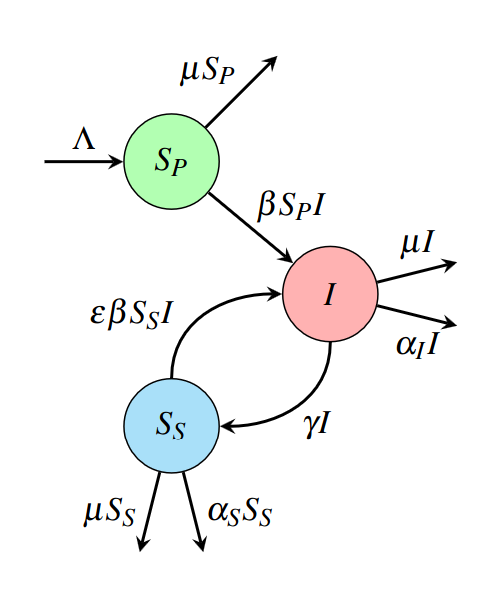
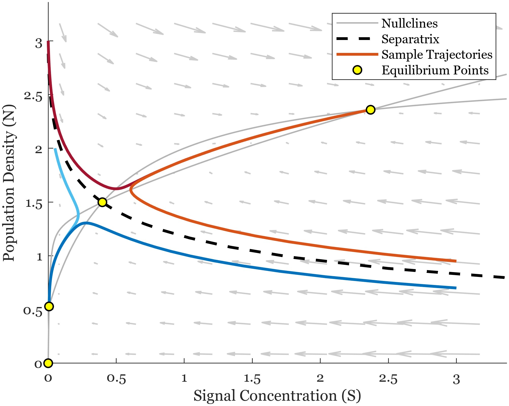

Research
Mathematical modeling of epidemiological and pathogen dynamics across scales.
Epidemiological dynamics of post-infection mortality
I began studying the epidemiological dynamics of post-infection mortality in 2023 under the mentorship of Prof. Zhisheng Shuai at the University of Central Florida. Our work led to an honors undergraduate thesis, an accepted publication, and a manuscript currently under review (see Publications)
More broadly, I am interested in how incidence functions and multistrain systems shape the epidemiological and evolutionary dynamics of pathogens. My current work is on the analysis of epidemiological models relevant for opportunistic bacterial pathogens, including coinfection dynamics and environmental transmission.

Quorum sensing and bacterial heterogeneity
In 2024, I worked with Profs. Rachel Kuske (Georgia Tech Mathematics) and Sam Brown (Georgia Tech Biology) on mathematical models of bacterial population growth and communication, with an emphasis on quorum sensing in Pseudomonas aeruginosa.
A central question is how cell-to-cell variability and switching behavior can produce heterogeneous or bimodal population-level responses, and this naturally connects deterministic population models with stochastic descriptions of individual-level behavior. We analyzed simple dynamical models and found that bistability emerges when cellular communication imparts a population-level benefit.
